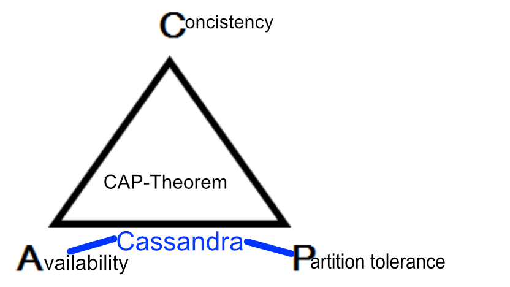
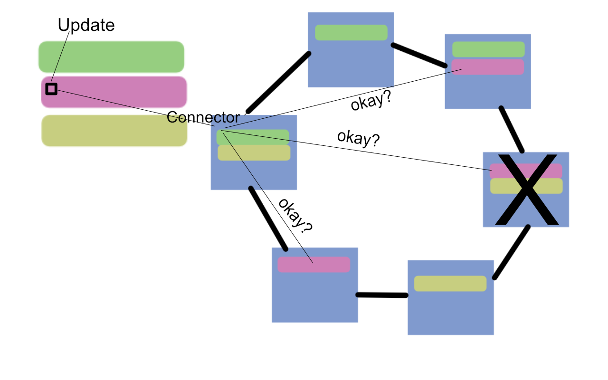
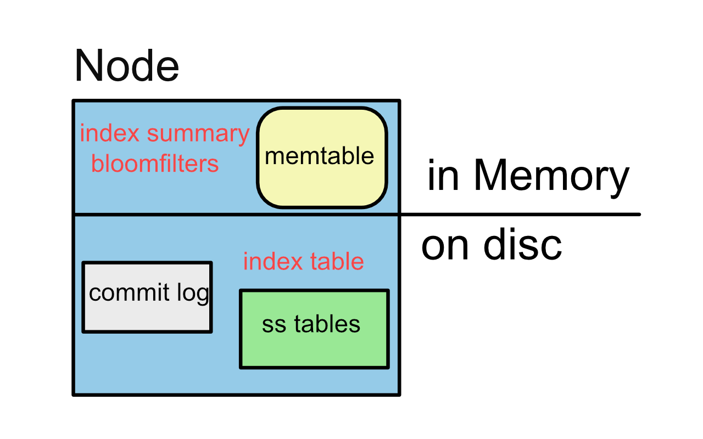

Apache Cassandra
An eventually consistent database,
that scales with ease
by Sabine Maennel
at pydata Zürich 25.1.2017
Overview
- Understanding Cassandra
- Cassandra in Action: Twissandra
from Cassandra by example, rackspace.com
- "map of maps"
- "a map of maps of maps"
- "containers that hold collections of column objects"
- "columns ... as 3-tuples"
Some characteristics
- A NoSQL database
- for big distributed data
- no single point of failure
- quick response times
- runs on cheap hardware spread to datacenters around the globe
History
- Facebook invented Cassandra
- Influenced by Google and Amazon
- Today its driven by Apache as an Open Source Project
How I met Cassandra
- exercise of analysing logfiles
- on second thought, it was a solution for scaling
coming from an RDBMS background ...
- the terminology is mostly the same
| RDBMS | Cassandra | |
|---|---|---|
| Query-Language | SQL | CQL |
| Container | Database | Keyspace |
| Table | Table | Table |
| Fields | Column | Column |
| Primary Key | Primary Key | Primary Key |
| Operations | SELECT, CRUD | SELECT, CRUD |
But Casssandra is different ...
Cassandra is a mulitlevel-map rather then a structure
- rows are a map!
- columns are a map!
- instead of transactions Cassandra's reads and writes are more like a multistep operations of copying and retrieving data
How to think of Cassandra
- Cassandra is mostly hosted on servers, that form rings: "clusters"
- there is no manager node
- they talk via a Gossip-Protocol
A table is distributed
- Partitions of the table are mapped to different serves in the ring
- the mapping is done by a hashing algorithm
- there are replications of each row -> replication-factor
Why replications of data?
- Availability: quick responses
- Partition tolerance: works even when some servers are down
- Conistency: all stored data are up to date
Now we understand why a table is distributed
- Partition tolerance
Imagine a query in this distributed system
- it does not work!
- but, some rows are closer then others ...
partitions are cluster of rows
the primary key has two parts:
- partions are determined by the partition key
- rows in a partion are sorted by the clustering key, which may be queried by range
rows contain maps rather than columns
- tables are also called column familys
- they consist of key-value pairs
- in an RDBMS these would be sparse tables
Columns are maps
- they consist of key-value pairs
- they come with a timestamp
- they may even expire
remember ...
- "map of maps"
- "map of maps of maps"
- "containers that hold collections of column objects"
- "columns ... as 3-tuples"
What does eventually consistent mean?
-> look at how Cassandra reads and writes
- write consistency: how many writes must be okay for write success?
Cassandra is consistent if ...
- write consistency + read consistency > replication factor
Lets look at an example Twissandra
>cassandra to start cassandra>cqlsh in a different terminal to start CQL
cqlsh> CREATE KEYSPACE IF NOT EXISTS twissandra
WITH REPLICATION = {'class': 'SimpleStrategy', 'replication_factor': 1};
cqlsh> DESCRIBE twissandra;
CREATE KEYSPACE twissandra WITH replication = {'class': 'SimpleStrategy', 'replication_factor': '1'} AND durable_writes = true;
Now we have to use that keyspace
cqlsh> USE twissandra;
We are ready to create the first table:
cqlsh> CREATE TABLE users (
username text PRIMARY KEY,
password text);
- the partion key is username
Look at your table
cqlsh> DESCRIBE users;
CREATE TABLE twissandra.users (
username text PRIMARY KEY,
password text
) WITH bloom_filter_fp_chance = 0.01
AND caching = {'keys': 'ALL', 'rows_per_partition': 'NONE'}
AND comment = ''
AND compaction = {'class': 'org.apache.cassandra.db.compaction.SizeTieredCompactionStrategy', 'max_threshold': '32', 'min_threshold': '4'}
AND compression = {'chunk_length_in_kb': '64', 'class': 'org.apache.cassandra.io.compress.LZ4Compressor'}
AND crc_check_chance = 1.0
AND dclocal_read_repair_chance = 0.1
AND default_time_to_live = 0
AND gc_grace_seconds = 864000
AND max_index_interval = 2048
AND memtable_flush_period_in_ms = 0
AND min_index_interval = 128
AND read_repair_chance = 0.0
AND speculative_retry = '99PERCENTILE';
There are a lots of defaults in place ...
- bloomfilters
- memtable_flush_period
- gc_grace_seconds
- read_repair_chance 
Datamodelling in Cassandra: thinking in queries
%% Example diagram
graph LR
l(Access) -- username --> a(user)
a -- username --> B(following)
a -- username --> A(followers)
a -- username --> D(Tweets
-Timeline) a -- username --> C(Tweets
-Userline) style l fill:#f9f,stroke:#333,stroke-width:4px; classDef db fill:lightblue,stroke:#333,stroke-width:1px; class a,A,B,C,D db
-Timeline) a -- username --> C(Tweets
-Userline) style l fill:#f9f,stroke:#333,stroke-width:4px; classDef db fill:lightblue,stroke:#333,stroke-width:1px; class a,A,B,C,D db
Following and Followers
cqlsh>
-- "username" follows "followed"
CREATE TABLE following (
username text,
followed text,
PRIMARY KEY(username, followed)
);
-- "username" is followed by "following"
CREATE TABLE followers (
username text,
following text,
PRIMARY KEY(username, following)
);
- in a RDBMS there would be only one table
- partition key username
- clustering key followed / following
Tweets and Userline
CREATE TABLE tweets (
tweetid uuid PRIMARY KEY,
username text,
body text
);
CREATE TABLE userline (
tweetid timeuuid,
username text,
body text,
PRIMARY KEY(username, tweetid)
);
- two times the same table
- tweets has partition key tweetid
- userline has partition key username
Timeline
CREATE TABLE timeline (
username text,
tweetid timeuuid,
posted_by text,
body text,
PRIMARY KEY(username, tweetid)
);
- almost the same table
- posted_by was added
Live Demo on a virtual machine
- you need Java
- Cassandra
- ccm (Cassandra Cluster manager)